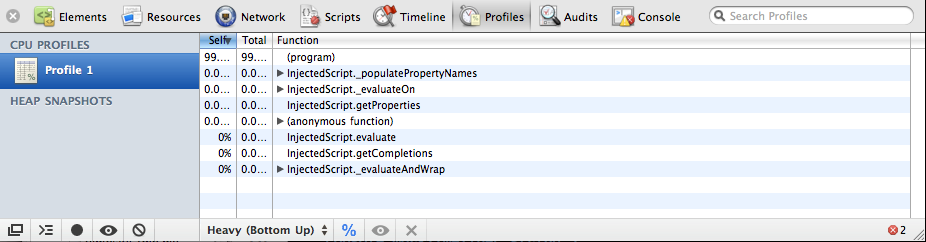
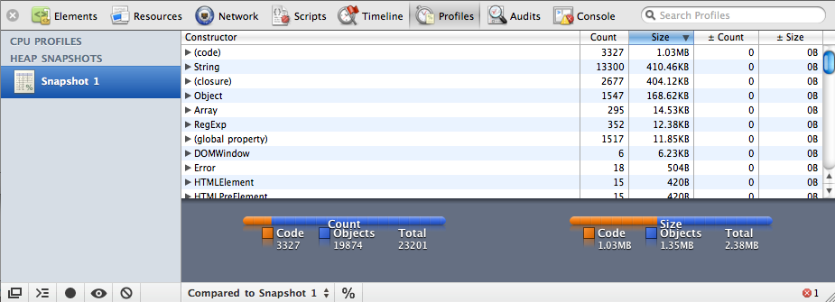

{% include JB/setup %}
{% raw %}
<div>
<div class="book" title="Profile and Timing"><div class="book"><div class="book"><div class="book"><h1 class="title1"><a id="I_sect19_d1e9481" class="calibre1"></a>Profile and Timing</h1></div></div></div><p class="calibre3"><a id="index-681L738VU4V" class="calibre1"></a><a id="index-321J726CO6N" class="calibre1"></a><a id="index-132M551NI8L" class="calibre1"></a>When you’re building large JavaScript apps, you need to keep
    an eye on performance, especially if you’ve got mobile clients. Both Web
    Inspector and Firebug include profiling and timing utilities that can help
    keep things ticking smoothly.</p><p class="calibre3">Profiling code is simple—just surround any code you want to profile
    with <code class="literal">console.profile()</code> and <code class="literal">console.profileEnd()</code><a id="I_indexterm9_d1e9506" class="calibre1"></a>:</p><pre class="screen">console.profile();
// ...
console.profileEnd();</pre><p class="calibre3">As soon as <code class="literal">profileEnd()</code> is
    called, a profile will be created, listing all the functions <span class="calibre1">(and the</span> time taken in each one) that were
    called between the two statements. See <a class="ulink" href="ch09s10.html#fig_9_14" title="Figure 9-14. Profiling function execution rates with Web Inspector">Figure 9-14</a> for an
    illustration.</p><div class="book"><div class="figure"><a id="fig_9_14" class="calibre1"></a><div class="book"><div class="book"><a id="I_mediaobject9_d1e9525" class="calibre1"></a></div></div><p class="title4">Figure 9-14. Profiling function execution rates with Web Inspector</p></div></div><p class="calibre3">Alternatively, you can use the <span class="calibre1"><em class="calibre4">record</em></span> feature
    <a id="I_indexterm9_d1e9536" class="calibre1"></a>of the inspector’s profiler, which is equivalent to wrapping
    code with the profile console statements. By seeing which functions are
    being called and which functions are taking longer to complete, you can
    discover and optimize bottlenecks in your code.</p><p class="calibre3">The profiler also allows you to take a <span class="calibre1"><em class="calibre4">snapshot</em></span>
    of the page’s current heap, as illustrated in <a class="ulink" href="ch09s10.html#fig_9_15" title="Figure 9-15. Seeing a bird's-eye view of the heap with Web Inspector">Figure 9-15</a>.
    This will show you how many objects have been allocated and the amount of
    memory the page is using. This is a great way of finding memory leaks
    because you can see whether any objects are being unwittingly stored, and
    are subsequently unable to be garbage collected.</p><div class="book"><div class="figure"><a id="fig_9_15" class="calibre1"></a><div class="book"><div class="book"><a id="I_mediaobject9_d1e9550" class="calibre1"></a></div></div><p class="title4">Figure 9-15. Seeing a bird's-eye view of the heap with Web Inspector</p></div></div><p class="calibre3">The console also lets you time how long it takes to execute some
    code. The API is similar to the profiler—simply wrap the code with
    <code class="literal">console.time(name)</code> and <code class="literal">console.timeEnd(name)</code><a id="I_indexterm9_d1e9562" class="calibre1"></a>. Unless you manage to fit everything on one line, you won’t
    be able to time code from inside the JavaScript console accurately;
    instead, you will have to add the timing statements directly into your
    scripts:</p><pre class="screen">console.time("timeName");
// ...
console.timeEnd("timeName");</pre><p class="calibre3">When <code class="literal">timeEnd()</code><a id="I_indexterm9_d1e9573" class="calibre1"></a> is called, the time taken between the two timing statements
    is sent to the console’s log in milliseconds. Using the console’s timing
    API, you could potentially incorporate benchmarking into your
    application’s tests, ensuring that additional code wasn’t significantly
    hurting the application’s existing performance.<a id="I_indexterm9_d1e9577" class="calibre1"></a><a id="I_indexterm9_d1e9578" class="calibre1"></a><a id="I_indexterm9_d1e9579" class="calibre1"></a><a id="I_indexterm9_d1e9580" class="calibre1"></a></p></div></div>

{% endraw %}

